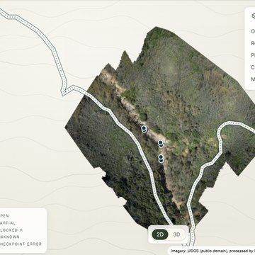

Fly once
A flight plan a stressed pilot gets right the first time.
Straight, overlapping lines with the camera pointing down. Any consumer drone with GPS. No markers on the ground.
One drone · one laptop · no internet
What it answers
Route for
Ambulance: stops at the debris. The village is cut off: clear this road first.
The real thing

Illustration · a concept valley made in code, not map data
The problem
A landslide closes a valley. The satellite pass is days away and may be under cloud, and online maps still show the roads as they were. Responders need to know which roads still work, who is cut off and what to clear first. Typhon turns one consumer drone flight into those answers, on one laptop, with no internet.
Built on open tools
How it works
Four steps, all on the laptop in the field. Nothing is uploaded.
Fly once
Straight, overlapping lines with the camera pointing down. Any consumer drone with GPS. No markers on the ground.
See the ground
Each photo lands on the map about – s after it arrives. It is labelled rough, about 10 to 20 m: for seeing, never for measuring.
In the demo the photos are replayed from disk, not sent live from the drone.
Measure
Heights, debris volume, the span of a washed-out crossing, places a helicopter can land. Position error: ±– m at – checkpoints, with no ground control.
Decide
Measured on this laptop, offline
Tested on a public USGS survey (public domain, doi:10.5066/P144KDGN), not our footage. 3 checkpoints is a small sample: the standard asks for 30.
Who it's for
First user
The duty officer who sends vehicles: which roads hold, who is cut off, what to clear first, where to look next.
In the field
A phone page with a team PIN. Reports wait on the phone with no signal and send when it returns; the map can be saved to the phone.
Next
Debris volume on a road, the span of a washed-out crossing, working space at each bank: measured from the same flight.
Software: free and open source, with no cloud bill per map. What a district buys once: a gaming laptop and a consumer drone, about ₹1.5–2.6 lakh (estimate from current listings, 21 Nov).
Questions we get
They show the valley as it was before the slide. A satellite pass can be days away, and cloud often hides the ground. A drone flies under the cloud on the same day, and Typhon turns its photos into a current map in the field.
It does not need one. The drone talks to its remote control over its own radio link and gets its position from GPS satellites. The map is made on the laptop, and phones join the laptop's own Wi-Fi hotspot. Set the drone up online once, before deployment.
The drone flies below the cloud, which is where satellites fail. From video, we keep the sharpest frame in each stretch of the flight and drop blurred ones, with a record of why. Where the ground still cannot be seen, the road stays unknown: never shown as open.
Any consumer drone with a camera that can look straight down, and GPS for each photo: in the photo itself or in the drone's flight log. Fly it in simple straight, overlapping lines. No special camera and no markers on the ground. We tested survey photos (USGS, public data) and our own drone video with its flight log (20 Nov).
The measured map: ±– m at – surveyed checkpoints, with no ground control. The rough map during the flight: about 10 to 20 m, labelled rough and used only to see, never to measure. The error is on screen with its sample size: 3 checkpoints is a small sample.
No. Processing, the map, the route answers and the field reports all run on one laptop. Nothing is uploaded.
Security
Five wrong codes lock that device out for 10 minutes.
test_wrong_codes_lock_the_device_outSign-ins are signed with a secret key and expire after 12 hours; a changed one is refused.
test_a_tampered_or_expired_cookie_is_refusedThe sign-in is never sent with requests that start on another site.
test_the_sign_in_cookie_cannot_be_read_…Scripts on the page cannot read the sign-in cookie.
test_the_sign_in_cookie_cannot_be_read_…Every query uses placeholders: injected text is stored as plain text.
test_sql_injection_is_stored_as_plain_textMap-tile requests cannot step outside the tiles folder.
test_tile_paths_cannot_leave_the_tiles_folderOne gatekeeper checks every request; anything not allowed is refused. A field team sees only its page.
test_field_team_sees_only_its_page…After signing in, only links inside the app are followed.
test_after_sign_in_only_local_paths_are_followedStill open, said plainly: on the field hotspot the app runs on plain HTTP (no certificates on a hotspot), so the hotspot password is the barrier. The independent ArgosX scan report: PENDING.